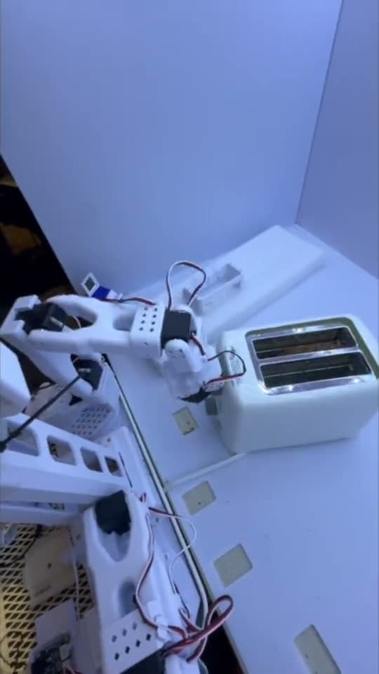
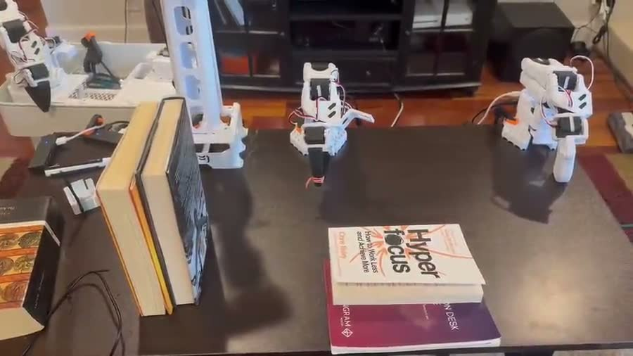
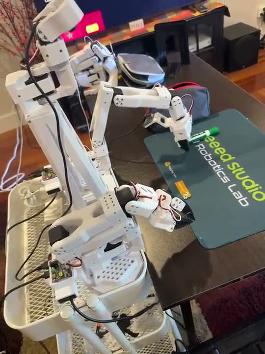

Home lab.
A running collection of experiments with low-cost arms on ordinary household tasks. I am particularly interested in how learned policies behave when the objects or setup change.



These are ongoing home experiments with small datasets and informal trials. I am documenting what I observed under the conditions tried so far, not presenting controlled evaluations or broad conclusions about the policies.
Why I'm doing this
I spent July 2022 to April 2024 on a real cleaning manipulator at Peanut Robotics using mostly classical methods: trajectory generation, ICP and state machines. At home, I have been exploring learned policies on lower-cost hardware.
These projects are not a formal comparison between classical and learned robotics. They are a way for me to build with newer policy architectures, observe how they behave in my setup, and develop better intuition for how they might fit into larger robotic systems.
The setup
Everything here runs on SO-101 arms from my XLeRobot setup, driven by the LeRobot stack: teleoperate the arm to record demonstrations, push the dataset to Hugging Face, train a policy on it, then run that policy back on the same hardware. There is no motion planner or hand-written task controller in these experiments.
The successful runs are useful, but changes in behavior are often more informative. These pages collect both without treating the small number of trials as a formal evaluation.
Observations so far
- A successful demonstration does not reveal how robust the behavior is. Changing an object or part of the setup often produces more informative behavior.
- The merged pen dataset was difficult to interpret because several conditions varied at once. The smaller single-pen setup was easier to inspect.
- In the pen trials, MolmoAct 2 worked with more of the colors I tried than ACT did. The experiments are too limited to attribute that difference to any single architectural feature.
- ACT behaved differently across the book and pen tasks. This is one reminder that behavior depends on the task, demonstrations, objects and setup, not only the policy architecture.
- Available hardware affects which models I can practically try at home.
The open questions
Longer term, what I actually want out of this is a framework that wraps a learned policy in the classical layers it needs to be trusted: a state machine for task orchestration (approach, engage, clean, retract, recover), force feedback in the inner loop to bound contact forces regardless of what the policy outputs, and recovery behaviors for when the policy goes outside its envelope. Some of the questions I am interested in:
- How small a demonstration dataset can produce a genuinely useful contact-rich policy?
- Where does the principled boundary between learned and classical actually sit?
- What does recovery look like for a learned policy when the task or environment differs from its demonstrations?
- How do you expose enough hooks that someone else can plug in their own policy and fallback behaviors?